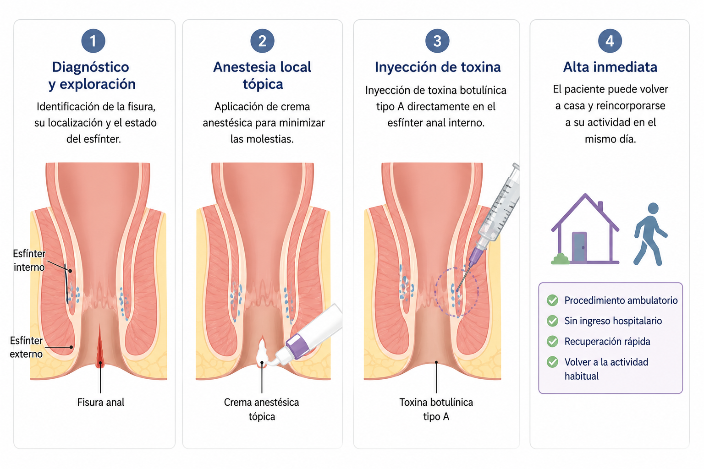

What is botulinum toxin injection for anal fissure?
The injection of botulinum toxin type A into the internal anal sphincter is an effective alternative to surgery for chronic anal fissure when conservative treatment has failed. It acts by temporarily relaxing the sphincter, which breaks the pain-spasm cycle that prevents healing.
Chronic anal fissure persists because pain causes hypertonia of the internal sphincter, which reduces blood supply to the area and impairs healing. Botulinum toxin interrupts this cycle in a reversible way, allowing the fissure to heal without surgery.


Mechanism of action: botulinum toxin type A blocks the release of acetylcholine at the neuromuscular junction, producing a temporary and reversible relaxation of the internal sphincter. The effect lasts between 3 and 6 months, sufficient time for the fissure to heal.
How is the procedure performed?
The procedure is performed at the clinic with prior topical local anaesthesia. It takes less than 15 minutes and the patient is discharged the same day.
Diagnosis and examination — identification of the fissure, its location and the state of the sphincter
Topical local anaesthesia — application of anaesthetic cream to minimise discomfort
Toxin injection — injection of botulinum toxin type A directly into the internal anal sphincter
Alta inmediata — el paciente puede volver a home and return to normal activity the same day
Indications: who is a candidate?
Botulinum toxin injection is particularly indicated for:
- Chronic anal fissure — that has not healed with conservative treatment after 6 weeks
- Fissure with internal sphincter hypertonia confirmed on examination
- Patients wishing to avoid surgery (lateral internal sphincterotomy)
- Recurrent fissure following previous medical treatment
Contraindications
- Fisura anal aguda (menos de 6 semanas) — se intenta primirst-line conservative treatment
- Active infection at the injection site
- Known allergy to botulinum toxin
- Pregnancy or breastfeeding
- Enfermedades neuromusculares (miastenia gravis, amyotrophic lateral sclerosis)
Results and efficacy
The healing rate of chronic anal fissure with botulinum toxin is high, with pain improvement from 7 days after injection and complete healing in 4–8 weeks in the majority of cases.
In case of recurrence, the procedure can be repeated. Lateral internal sphincterotomy is reserved for cases that respond neither to conservative treatment nor to botulinum toxin.
Consulta ONEstep® — Diagnóstico y tratamiento en el mismo acto
El Dr. Jaime Jorge Cerrudo performs the examination, diagnosis and botulinum toxin injection in the same appointment, with no need to schedule a second visit.
No surgery or general anaesthesia
Pain improvement from 7 days
Procedimiento de menos de 15 minutos
Efecto reversible y seguro